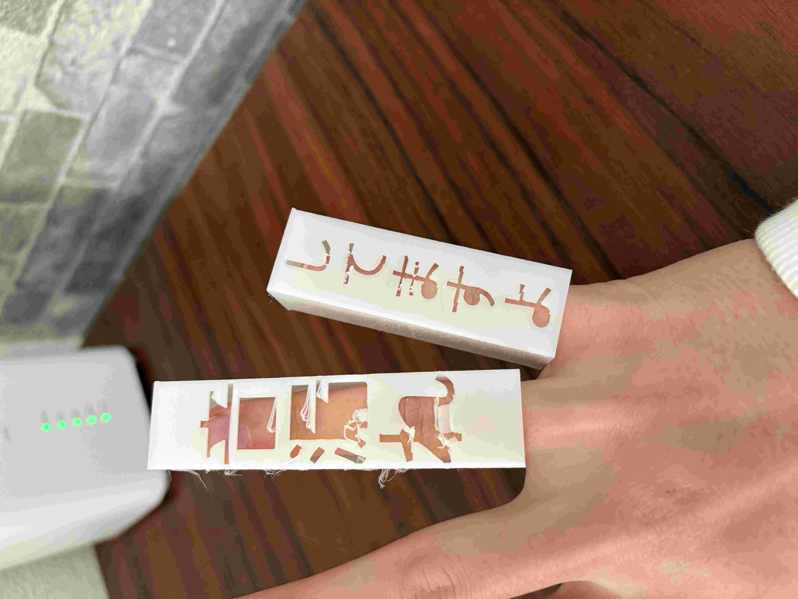

取り組んだ課題
最初は文化祭時で見た、鈴木鈴木のキャッチをしていた人をテーマにしましたが難しかったため変更しました。
そして電車で音漏れしている人をテーマに考えることにしました。みなさん音漏れしている人がいたらどうしますか？
多くの人が迷惑でも直接言いづらいのではないでしょうか。わざわざ声をかけて「音漏れしていますよ」というの勇気がいるし
声を変えられた人も恥ずかしかったり、小さな問題ですが難しい問題です。そのため私たちのグループはどうやったら簡単に
音漏れしていることを伝えられるのか考えてみました。
完成品・音漏れ注意の指ケース
作品の説明
自分が作ったのは「音漏れ注意の指ケース」です。 直接言えないのなら何か見せることが必要だと考え、声に出さずに済むこの作品を作りました。 これを使うことによって座っている状況で隣の人が音漏れをしていた場合、手を見せ近づければ相手に気付かせることができます。 また、左右の手でも使えるためどんな状況でも使うことができます。
使用機材
- 3Dプリンター
使用素材
- 素材 1
設計の様子